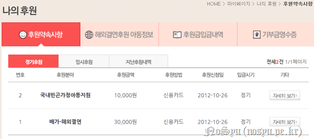
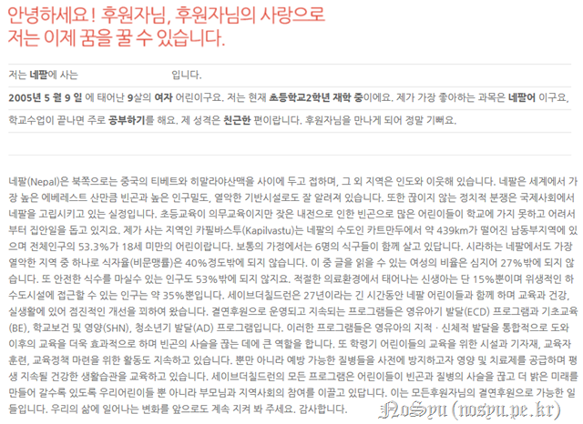
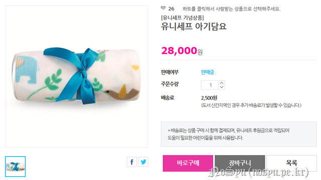
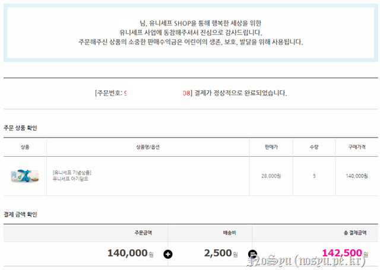

변하지 않고 변한다고 했던가? 개인적으로 참으로 많은 것이 변한 것 같다. 그 변화 속에서 더더욱 좋은 모습으로 변하기를 바랄 뿐이구나.
이번엔 조금 일찍 이 글을 적는구나. 이유는 하나. EMNLP 학회가 열리는 카타르 도하에 가는데 생일 날짜가 겹쳤기 때문이지. 제 때 내지 못한다면 차라리 미리 하는 것이 좋지 않을까 싶구나.
작년에 너가 기부하기로 한 금액은… 어떻게 계산한 것인지 모르겠구나. 어쩌면 이것이 하나의 변화인지도 모르겠다.

그래도 이렇게 매달 지속적으로 후원이 된다니 참으로 좋구나. 한 달에 4만원, 12달 하여 48만원을 기부하였구나. 문득 생각해보면 너가 지금 사고 싶어하는 태블릿 PC의 절반 가격 정도를 후원한 것이니 무언가 느낌이 오묘하겠구나.

일대일로 후원해준다는 아이는 여전하구나. 그런데 작년과 비교해보면 나이는 한 살 올랐는데 학년은 그대로네? 뭐지??
여하튼 이번에는 다시 한국에 돌아왔으니 재작년처럼 하자구나. 유니세프의 기념상품을 구입해서 사람들에게 나눠주도록 하자.
2년 사이에 많은 것이 바뀌어서 전에 자주 구입하던 물품이 없더구나. 그리고 구입할만한 것도 역시나 없어서 난감했지. 어떻게 할까 고민하다가 진행한 너의 선택은 상당히 좋다고 봐.

이름은 아기담요라고 되어 있지만, 그 크기를 보니 성인들이 무릎담요로 사용해도 되겠더구나. 그래서 이를 구입하기로 한 것은 참으로 잘한 선택이라고 생각해.
적은 돈이지만, 그래도 많은 이들에게 좋은 나날이 될 수 있기를 바라는 마음이야.

다만, 걱정이 되는 것은 금요일 밤에 결제를 하여 월요일에 배송이 된다면 화요일에 받게 될 것인데, 화요일 밤에 출국인 너로서는 받지 못하고 출국할 수 있겠구나. 그런 불상사가 발생하지 않기를 바랄 뿐이야.
이렇게 글을 쓰고 나니 참으로 찹찹한 모습이구나. 기쁜 듯 슬픈 듯 그러한 표정을 가진 너의 얼굴에 나는 언제나 자랑으로 남기를 바랄 뿐이야. 그게 내 바램일 뿐이야.